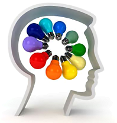
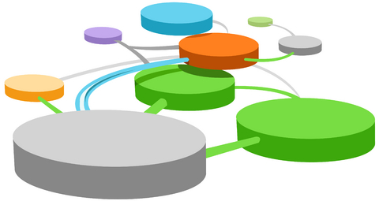

Hasan Acül
Yeni Ürün Geliþtirme Uzmaný (NPDP), PDMA Onaylý Eðitmen (REP)
ROADMAP® Academy Consulting Engineering
Not: Bu makale ilk defa AP Ambalaj Plastik Dergisi Ekim 2011 sayýsýnda yayýnlanmýþtýr.
Günümüzde araþtýrma ve ürün geliþtirme çalýþmalarýnýn neden yapýlmasý gerekliliði konusu güncelliðini yitirmiþtir. Bu faaliyetlerinin büyük ölçekte ülkelere, küçük ölçekte iþletmelere saðladýðý faydalar üzerine yapýlmýþ bir çok istatistik çalýþmasý ve örnek olay incelemesi (vaka analizi) vardýr [1]. Araþtýrma ve ürün geliþtirme alanýnda güncel sorular çalýþmalarýn nasýl daha verimli yapýlabileceði konusuna, yani süreç yönetimine odaklanmýþtýr.
Yeni ürün geliþtirme, sistem ve süreç geliþtirme, inovasyon yönetimi ve mühendislik çalýþmalarýnda performans, verimlilik ve etkinliðinin artýrýlmasý, günümüzün rekabet þartlarýnda firmalar için can yakýcý bir amaç olmaktadýr.
2011 yýlý içerisinde kullanýldýðý pek çok sektörde kullaným oranlarýný artýran plastik sektörü, Türkiye'nin toplam kimya ihracatý içinde % 28'lik payla ikinci sýrada yer almaktadýr. Bununla birlikte sektörün 2011 yýlýnda %16 büyümesi beklenmektedir [2]. Türk plastik sanayisinin dünya plastik sektörü içindeki payý % 1,6 düzeyindedir. AB ülkeleri arasýnda 6. büyük plastik iþleme kapasitesine sahiptir [3].
Ulusal ve uluslararasý talebinin gelecekte de bugünkü gibi yüksek olacaðý varsayýmý; Avrupa pazarlarýna yakýnlýðý ve göreceli ucuz iþgücü; uzun yýllarýn tecrübe ve bilgi birikimi; düþük miktarlarda mamul üretebilme, üretim ve teslimatta esnek davranabilme kabiliyeti vb. birçok güçlü yana sahip olmasýna raðmen plastik sektörü, ürün geliþtirme çalýþmalarýna yeterince kaynak aktaramamaktadýr. [4]. TUÝK 2010 istatistiklerine göre “Kauçuk ve plastik ürünlerin imalatý” sektörünün araþtýrma ve ürün geliþtirme giderlerine ayýrdýklarý pay % 1,76 (56.904.243 TL) olmuþtur [5].

Rekabette sektör firmalarýmýzýn avantajýný artýrmak için yukarýda bahsedilen konulardan çýkartýlacak ortak sonuçlar: 1) sektörde araþtýrma ve ürün geliþtirme çalýþmalarýnýn artýrýlmasý ve 2) yapýlan çalýþmalarýn süreçlerinin çok daha verimli yönetilmesi gerekliliðidir. Bu eksikliklerin çözülmesi amacý doðrultusunda, Uluslararasý Yeni Ürün Geliþtirme ve Yönetimi Birliði (PDMA), Proje Yönetimi Enstitüsü (PMI), Avrupa Ýnovasyon Ýnsiyatifi vb. kurumlarýn yaklaþýmlarý; Altý Sigma, Stratejik Yönetim, Teknoloji Yönetimi, vb. süreç uygulamalarý gibi uluslararasý alanda kabul gören metotlar, sistem ve uygulamalar referans alýnmalýdýr.
Yeni ürün süreç geliþtirme konusunda temel yaklaþým, ürün geliþtirme çalýþmalarýnýn iþletmenin karakterine uygun, çok yönlü, bilimsel ve strateji temelli, sistematik ve ölçülebilir biçimde yapýlandýrýlmasý, denetlen-mesi, deðerlendirilmesi, desteklenmesi ve ölçülmesi olmalýdýr [6].
Yeni ürün geliþtirme süreç yönetiminin temel kapsamý genel olarak aþaðýdaki baþlýklar halinde ifade edilebilir [7]:
- Liderlik
- Yeni Ürün Geliþtirme Stratejileri
- Ürün Portföy Yönetimi
- Ürün Geliþtirme Aþamalarýnýn Yönetimi
- Kaynaklarýn Yönetimi
- Bilginin Yönetimi
- Fikri Mülkiyet Haklarýnýn Yönetimi
- Takým Yönetimi
- Performans Deðerlendirme
Yeni ürün geliþtirme süreç yönetimi aþamalarý temel çerçevede þunlardýr:
- Tanýmlama
- Analiz
- Planlama
- Uygulama
- Denetleme
Yeni ürün geliþtirme süreç yönetiminin iþletmelere saðladýðý baþlýca faydalar þöylece sýralanabilir:
- Strateji ile bütünleþmiþ sistematik, ölçülebilir ve sürdürülebilir yeni ürün geliþtirme süreci sahibi olmalarýna destek olur
- Ürün yönetimi ve ürün portföy yönetiminin verimliliðinin artmasýna; doðru projelerin doðru bir biçimde yapýlmasýna imkan saðlar
- Geliþtirilen yeni ürünlerin pazar baþarý oranlarýnýn artmasýna yardým eder
- Fikirden pazara ürün geliþtirme ve ticarileþme zamanýnýn kýsalmasýna yardýmcý olur
- Bilgi seviyeleri yüksek, sürekli kendini geliþtiren yetiþmiþ insan kaynaðý ile çalýþmalarýna imkân saðlar
- Ýþletmenin baþta üniversiteler ve araþtýrma merkezleri olmak üzere tüm paydaþlar ile iþbirliði faaliyetlerinin artmasýna yardýmcý olur
- Araþtýrma ve ürün geliþtirme faaliyetlerine yönelik devlet destek ve teþviklerinin alýnmasýnda avantaj saðlar
- Yeni ürün geliþtirme ile baðlantýlý süreçlerde iþleyiþ kalitesini yükseltir; sürdürülebilir bir büyümenin ve geliþmenin temel taþý olur.
Araþtýrma ve ürün geliþtirme faaliyetlerinin bilimsel temelli yönetilmesi iþletmelerin yüksek karlýlýk, rekabet gücü, sürdürülebilir büyümeleri açýsýndan hayati olmasýnýn yaný sýra, çoðunluðu KOBÝ ölçekli iþletmelerden oluþan plastik sanayimizin geliþimi ve gücü açýsýndan da oldukça önemlidir. Bu noktadan bakýldýðýnda sektör firmalarýmýza kýsa dönemli bir yaklaþým yerine uzun dönemli, geleceðe yatýrým yapan, araþtýrma ve ürün geliþtirme, inovasyon faaliyetlerini öne çýkartan bir anlayýþý benimsemelerini öneririm. Bu amaçla da üniversiteler baþta olmak üzere, eðitim ve araþtýrma kurumlarý, konu üzerinde çalýþan yeni ürün geliþtirme süreç yönetim uzmanlýk firmalarý ve destek kurumlarý ile daha yoðun iþbirliði yapmalarýný tavsiye ederim.
Kaynaklar:
[1] JERALD H., MARÝUS M., EDQUÝST C., “Innovation, Science, and Institutional Change: A Research Handbook”, Oxford University Press, 2006
[2] Plastik Sektörü Yayýný, Ýþte KOBÝ (istekobi.com.tr)
[3] PAGEV, Dünyada ve Türkiye’de Plastik Tüketimi yayýný (pagev.com)
[4] Eraslan Ý.H, Karataþ H., Kaya,H., “Türk Plastik Sektörünün Rekabetçilik Analizi”, Ýstanbul Ticaret Üniversitesi Sosyal Bilimler Dergisi Yýl:6 Sayý:11 Bahar 2007/2 S.203-21
[5] TÜÝK web sayfasý (tuik.gov.tr)
[6]Acül, H., “Kobilerde Araþtýrma ve Ürün Geliþtirme Bölümlerinin Çok Yönlü Yapýlandýrýlmasý ve Sistematik Yönetimi Üzerine Öneriler”, 5. KOBÝ’ler ve Verimlilik Kongresi, Ýstanbul Kültür Üniversitesi, 25-26 Kasým 2008
[7] Yeni ürün Geliþtirme ve Yönetim Birliði (PDMA), Yeni Ürün Geliþtirme Uzmaný (NPDP) Sertifikasý süreç çerçevesi |